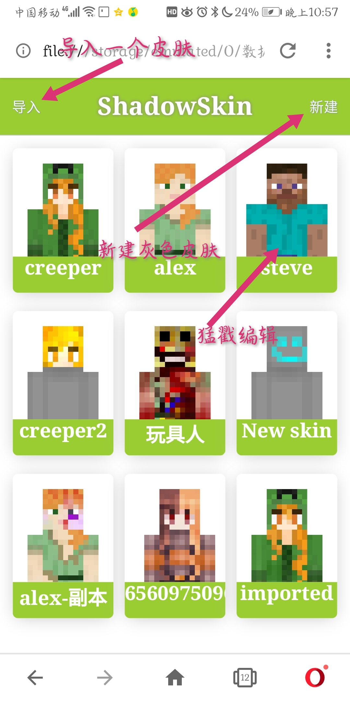
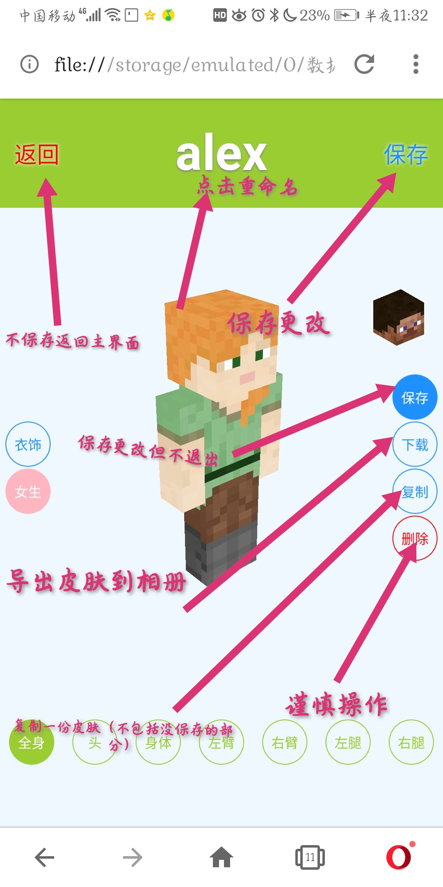
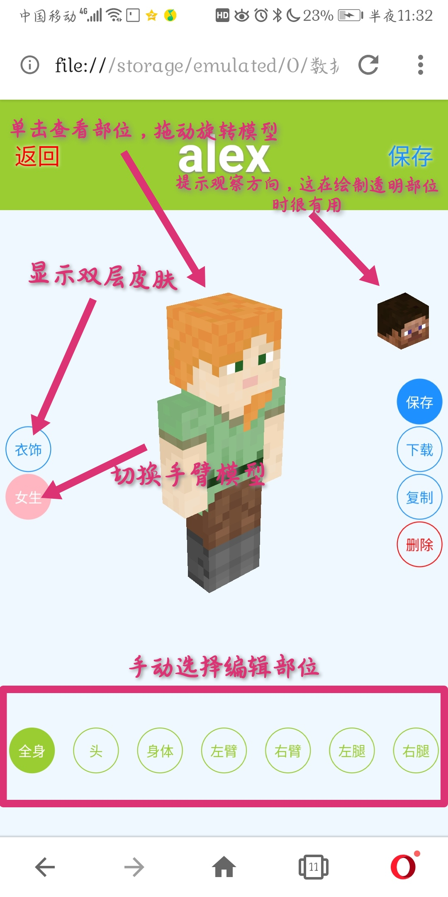
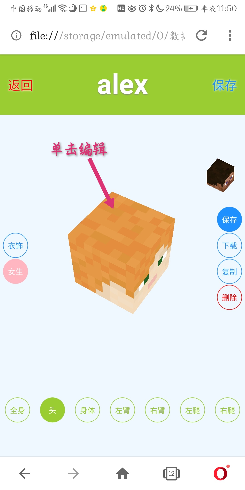
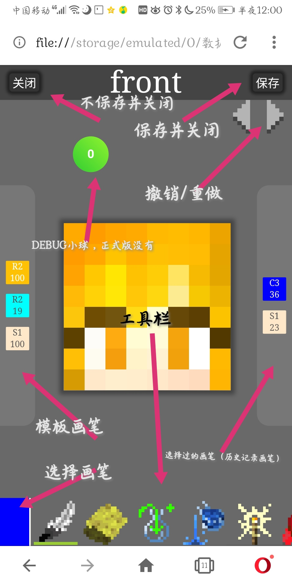
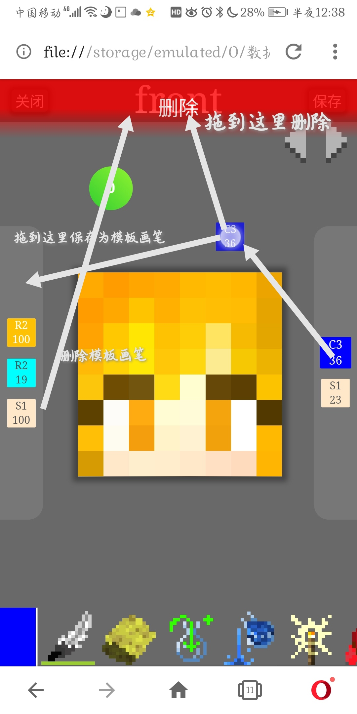
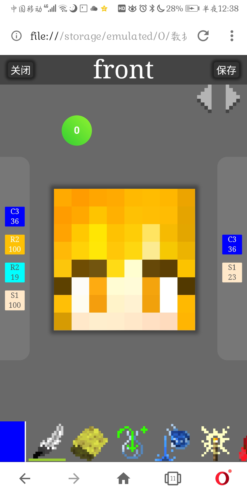

这是ShadowSkin的新手教程。然而，ShadowSkin的用法非常简单， 你大可不必观看教程即可开始您的第一个项目。本文仅提示 难以理解的相关操作编辑器页面在后续版本里还会继续更新，那教程总不能 更新一下换一次吧。那就凑合一下咯！
ShadowSkin是一个基于HTML的关于Minecraft的皮肤编辑器。
如果您不知道Minecraft是啥，那我也不知道你下载了这玩意做什么用QAQ
ShadowSkin开发的目的就是在移动客户端上搭建一个轻量级的 皮肤编辑器。
它有加光，色相，水渍等工具；三种笔头，可调半径等 画笔设置。它的预览您将会在编辑页面章节看到
这是一个图例，不是瞎子都能看得懂
主页面操作很少，重命名等操作尽在视图界面
视图界面操作比较多，一张图解释不过来  
多来几张拼凑一下。
编辑页面是比较难懂的，这张图是基本操作
你一定注意到了这个家伙吧？
接下来我们会解释它
这定义了一个画笔。 每次保存新画笔时都会在历史记录画笔里添加一个对应画笔。 点击它们来使用。 
例如：R1 100就是一个半径为1且不透明的辐射笔
- 它的背景颜色对应它的颜色
- C3代表半径为3的圆形笔
- S:square - 方形笔
- C:circle - 圆形笔
- R:radiation - 辐射笔
- 36是它的不透明度，即36%，接近透明
拖动历史记录画笔里的画笔到模板画笔里， 使它能够被保存，否则在您下次编辑的时候 它们就会被清除
| 工具 | 释义 | 属性 |
|---|---|---|
| 画笔 | 绘制图案 | 通过修改画笔数据更改 |
| 橡皮擦 | 只能使用单块擦除，因为minecraft不支持半透明 | 不可更改，只能用块 |
| 吸色器 | 提取当前部位的颜色到画笔，但保留上一次画笔的 半径，笔头形状 | 不可更改 |
| 水渍 | 随机添加减少明度 | 通过选择模式和画笔更改水渍范围，但不能调颜色 |
| 光照 |
局部光影调节
|
使用全部画笔设置，颜色参数将影响加深/减淡的颜色趋势 |
| 改色 | 修改色相 | 使用画笔的颜色替换绘制部位的颜色 |
那么，教程到这里就结束了。如果还有不懂
那只能怪你理解力不好咯！